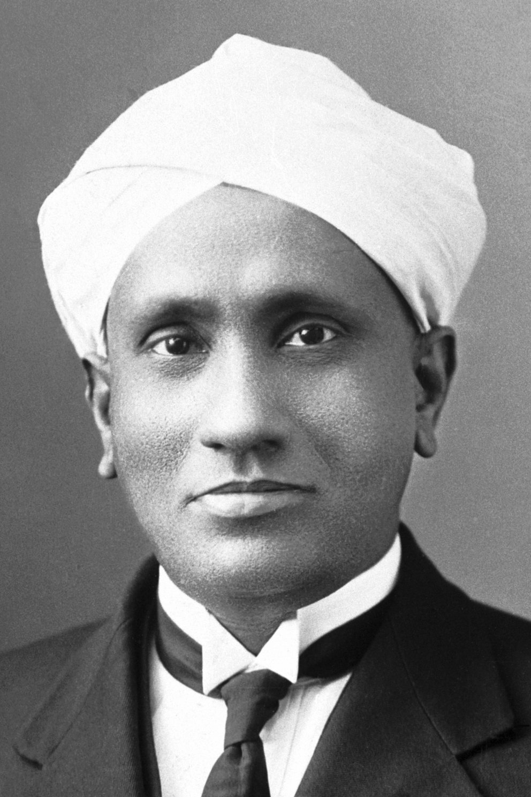
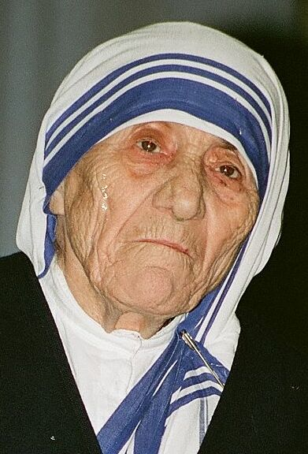

The Nobel Prizes Norwegian: Nobelprisen are five separate prizes that, according to Alfred Nobel's will of 1895, are awarded to "those who, during the preceding year, have conferred the greatest benefit to humankind." Alfred Nobel was a Swedish chemist, engineer, and industrialist most famously known for the invention of dynamite. He died in 1896. In his will, he bequeathed all of his "remaining realisable assets" to be used to establish five prizes which became known as "Nobel Prizes." Nobel Prizes were first awarded in 1901.
Nobel Prizes are awarded in the fields of Physics, Chemistry, Physiology or Medicine, Literature, and Peace (Nobel characterized the Peace Prize as "to the person who has done the most or best to advance fellowship among nations, the abolition or reduction of standing armies, and the establishment and promotion of peace congresses"). In 1968, Sveriges Riksbank (Sweden's central bank) funded the establishment of the Prize in Economic Sciences in Memory of Alfred Nobel, to also be administered by the Nobel Foundation. Nobel Prizes are widely regarded as the most prestigious awards available in their respective fields
The prize ceremonies take place annually. Each recipient (known as a "laureate") receives a gold medal, a diploma, and a monetary award. In 2021, the Nobel Prize monetary award is 10,000,000 SEK. A prize may not be shared among more than three individuals, although the Nobel Peace Prize can be awarded to organizations of more than three people.Although Nobel Prizes are not awarded posthumously, if a person is awarded a prize and dies before receiving it, the prize is presented.
Alfred Nobel was born on 21 October 1833 in Stockholm, Sweden, into a family of engineers. He was a chemist, engineer, and inventor. In 1894, Nobel purchased the Bofors iron and steel mill, which he made into a major armaments manufacturer. Nobel also invented ballistite. This invention was a precursor to many smokeless military explosives, especially the British smokeless powder cordite. As a consequence of his patent claims, Nobel was eventually involved in a patent infringement lawsuit over cordite. Nobel amassed a fortune during his lifetime, with most of his wealth coming from his 355 inventions, of which dynamite is the most famous.
In 1888, Nobel was astonished to read his own obituary, titled "The merchant of death is dead", in a French newspaper. It was Alfred's brother Ludvig who had died; the obituary was eight years premature. The article disconcerted Nobel and made him apprehensive about how he would be remembered. This inspired him to change his will. On 10 December 1896, Alfred Nobel died in his villa in San Remo, Italy, from a cerebral haemorrhage. He was 63 years old.
Nobel wrote several wills during his lifetime. He composed the last over a year before he died, signing it at the Swedish–Norwegian Club in Paris on 27 November 1895.To widespread astonishment, Nobel's last will specified that his fortune be used to create a series of prizes for those who confer the "greatest benefit on mankind" in physics, chemistry, physiology or medicine, literature, and peace.Nobel bequeathed 94% of his total assets, 31 million SEK (c. US$186 million, €150 million in 2008), to establish the five Nobel Prizes.Owing to skepticism surrounding the will, it was not approved by the Storting in Norway until 26 April 1897.The executors of the will, Ragnar Sohlman and Rudolf Lilljequist, formed the Nobel Foundation to take care of the fortune and to organise the awarding of prizes
Nobel's instructions named a Norwegian Nobel Committee to award the Peace Prize, the members of whom were appointed shortly after the will was approved in April 1897. Soon thereafter, the other prize-awarding organizations were designated. These were Karolinska Institute on 7 June, the Swedish Academy on 9 June, and the Royal Swedish Academy of Sciences on 11 June.The Nobel Foundation reached an agreement on guidelines for how the prizes should be awarded; and, in 1900, the Nobel Foundation's newly created statutes were promulgated by King Oscar II.In 1905, the personal union between Sweden and Norway was dissolved.
| Year | Image | Laureate | Field | Citation |
|---|---|---|---|---|
| 1902 | Ronald Ross | Physiology or Medicine | "for his work on malaria, by which he has shown how it enters the organism and thereby has laid the foundation for successful research on this disease and methods of combating it." | |
| 1907 | Joseph Rudyard Kipling | Literature | "in consideration of the power of observation, originality of imagination, virility of ideas and remarkable talent for narration which characterize the creations of this world-famous author." | |
| 1913 | Rabindranath Tagor | Literature | "because of his profoundly sensitive, fresh and beautiful verse, by which, with consummate skill, he has made his poetic thought, expressed in his own English words, a part of the literature of the West." | |
| 1930 |  | Chandrasekhara Venkata Raman | Physics | "for his work on the scattering of light and for the discovery of the effect named after him." |
| 1968 | Har Gobind Khorana | Physiology or Medicine | "for their interpretation of the genetic code and its function in protein synthesis." | |
| 1979 |  | Teresa Bojaxhiu, M.C. | Peace | "for her work for bringing help to suffering humanity." |
| 1983 | Subrahmanyan Chandrasekhar | Physics | "for his theoretical studies of the physical processes of importance to the structure and evolution of the stars." | |
| 1998 | Amartya Kumar Sen | Economics | "for his contributions to welfare economics." | |
| 2009 | Venkatraman "Venki" Ramakrishnan | Chemistry | "for studies of the structure and function of the ribosome." | |
| 2014 | Kailash Satyarthi | Peace | "for their struggle against the suppression of children and young people and for the right of all children to education." | |
| 2019 | Abhijit Banerjee | Economics | "for their experimental approach to alleviating global poverty" |